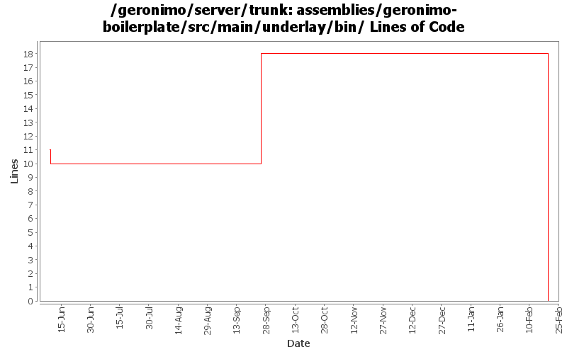

[root]/assemblies/geronimo-boilerplate/src/main/underlay/bin

| Author | Changes | Lines of Code | Lines per Change |
|---|---|---|---|
| Totals | 33 (100.0%) | 18 (100.0%) | 0.5 |
| dwoods | 17 (51.5%) | 18 (100.0%) | 1.0 |
| djencks | 16 (48.5%) | 0 (0.0%) | 0.0 |
GERONIMO-4538 Move stuff around so framework is self contained and builds the framework server. No groupId changes in this revision in case people dont like this change
0 lines of code changed in 10 files:
GERONIMO-4312 slight change to Jencks' fix to verify that java exists and give an error if not
13 lines of code changed in 1 file:
GERONIMO-4239, GERONIMO-4302. Fix more classpath issues in console, revert broken attempt to have client-system.jar self-install itself
0 lines of code changed in 2 files:
GERONIMO-4302 have client-system.car self-extract client.jar and the client scripts. This is somewhat questionable but lets see how it works
0 lines of code changed in 2 files:
GERONIMO-4093 Do not require JAVA_HOME to be set.
0 lines of code changed in 2 files:
GERONIMO-4093 fix error/typo. Jarek, thanks for pointing it out.
5 lines of code changed in 1 file:
GERONIMO-4093 Remove duplicate :end
0 lines of code changed in 1 file:
GERONIMO-4093 Enhance GShell based scripts to use setjavaenv for determining the Java runtime, allow users to continue to supply a setenv script and updated the Unix gsh script with some missing Cygwin, OS400 and error checking that was in geronimo.sh.
0 lines of code changed in 14 files: